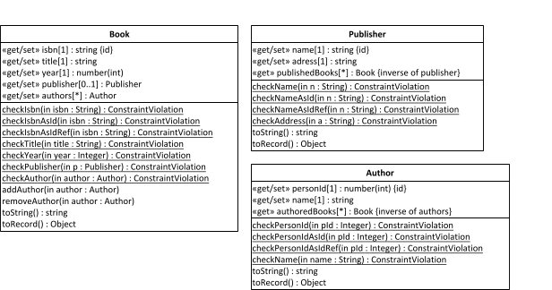

| 1. Make a JavaScript Class Model | ||
|---|---|---|
 | Chapter 8. Implementing Bidirectional Associations with Plain JS |  |
| 1. Make a JavaScript Class Model | ||
|---|---|---|
| | Chapter 8. Implementing Bidirectional Associations with Plain JS | |
The starting point for making our JS class model is an OO class model with derived inverse reference properties like the one discussed above, which we present here again, for convenience:
Notice that the model contains two derived inverse reference properties: Publisher::/publishedBooks and Author::/authoredBooks. Each of them is linked to a master property, from which it is derived. Consequently, each of them represents a pair of mutually inverse reference properties corresponding to a bidirectional association.
Compared to making JS class models with unidirectional associations, the only new issue is:
Add a «get» stereotype to all derived inverse reference properties, implying that they have an implicit getter, but no setter. They are implicitly set whenever their inverse master reference property is updated.
This concerns the two derived inverse reference properties Publisher::/publishedBooks and Author::/authoredBooks. Thus, we get the following JavaScript class model:
|  |
| |  | |
| Chapter 8. Implementing Bidirectional Associations with Plain JS |  | 2. Write the Model Code |